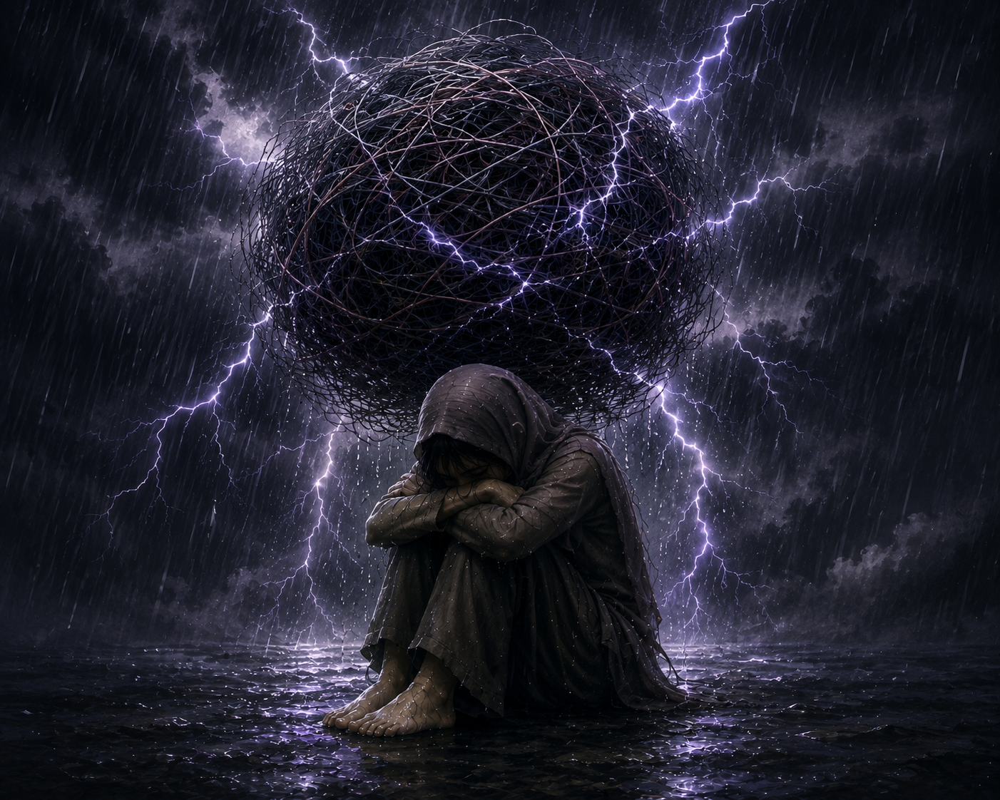
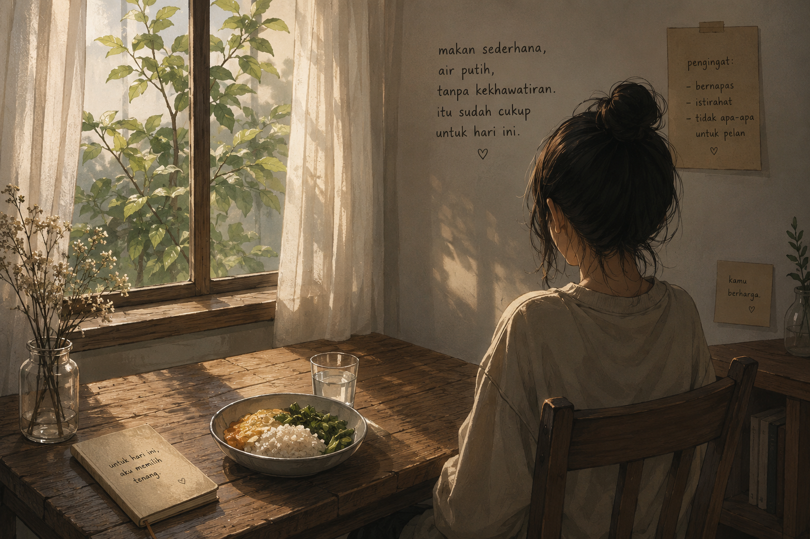

Hari ini aku kembali membuka bagian diriku yang selama ini sulit dijelaskan. Ada sesuatu di dalam pikiranku yang selama ini terasa seperti bola benang kusut padat yang terus berputar tanpa henti. Di sekitarnya ada sengatan listrik, dan hujan atau air yang tidak berhenti turun.
Aku tidak tahu bagaimana menjelaskannya dengan lisan ataupun tulisan. Bahkan aku sendiri sering tidak mengerti apa yang sebenarnya kurasakan.
Hari ini aku melihat gambaran itu dalam bentuk ilustrasi. Dan jujur, saat melihatnya aku takut. Aku bertanya:

Tapi setelah ku lihat kembali yang kulihat adalah seseorang yang sangat lelah
Seseorang yang terlalu lama membawa pikiran, rasa takut, kenangan, dan beban yang bertumpuk sendirian. Seseorang yang terlalu lama kehujanan tanpa tempat berteduh.
Lalu aku membayangkan jika ada seorang anak kecil membawa bola sebesar itu di kepalanya.
Tanpa berpikir panjang aku akan…
Hari ini aku baru sadar…
Anak kecil itu mungkin adalah diriku sendiri.
Dan mungkin selama ini bukan nasihat yang kubutuhkan. Bukan kalimat “harus kuat” atau “harus biasa saja”.
Mungkin yang kubutuhkan adalah seseorang yang berkata:
Hari ini aku juga menyadari sesuatu yang sederhana.
Aku masih punya keinginan.
Bukan rumah besar.
Bukan kehidupan mewah.
Bukan sesuatu yang rumit.
Aku hanya ingin:
makan, makanan sederhana, ditemani air putih, tanpa kekhawatiran.

Dan saat membayangkannya, aku bisa bernapas tanpa sesak.
Mungkin selama ini aku bukan ingin menghilang.
Mungkin aku hanya terlalu lama hidup tanpa rasa aman.
Jika hari ini aku terlalu sesak, tolong peluk hatiku dengan cara yang hanya Engkau tahu.
Dan jika aku lupa caranya menyayangi diriku sendiri, pelan-pelan ajarkan aku lagi.